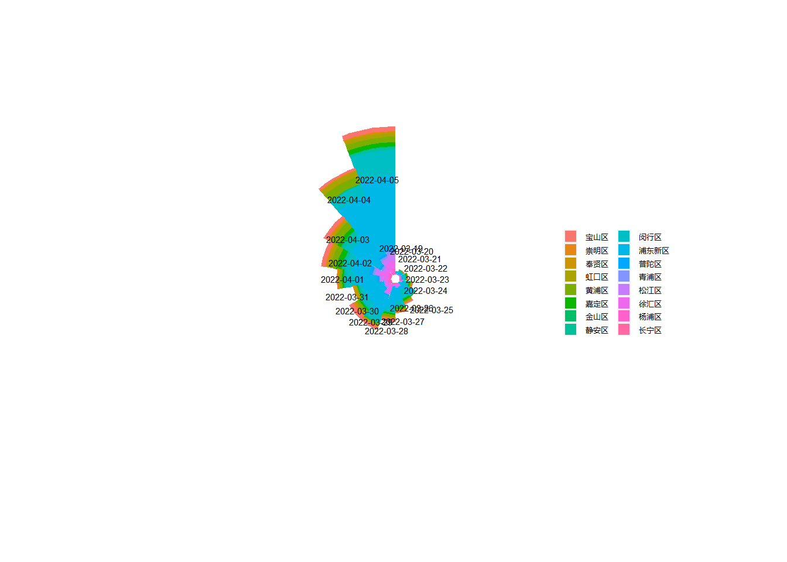
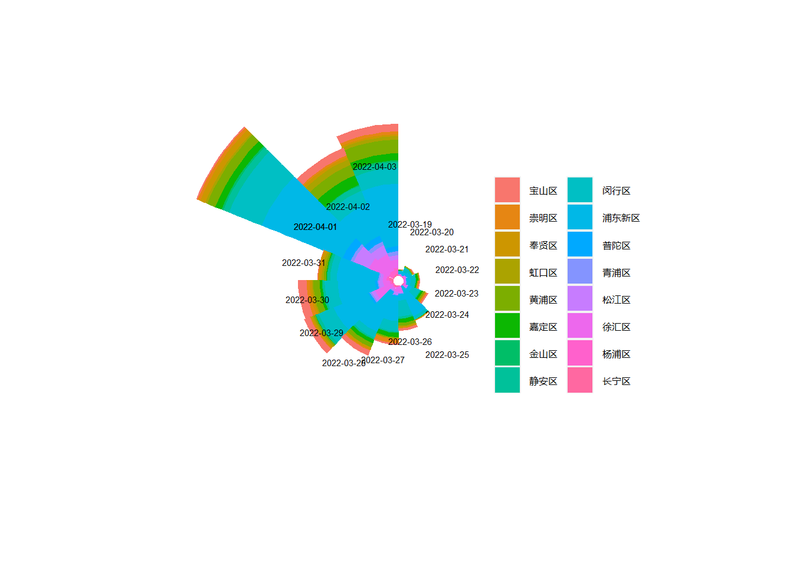
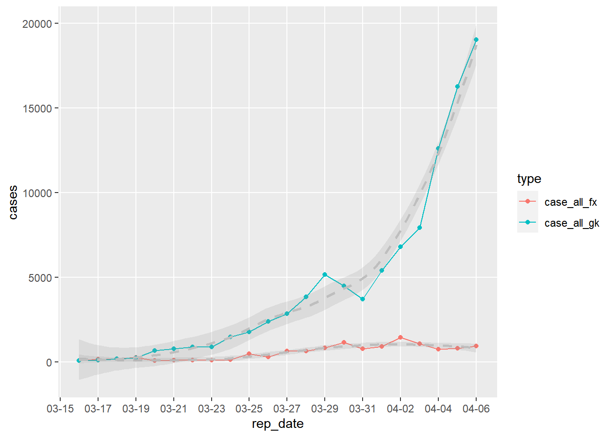
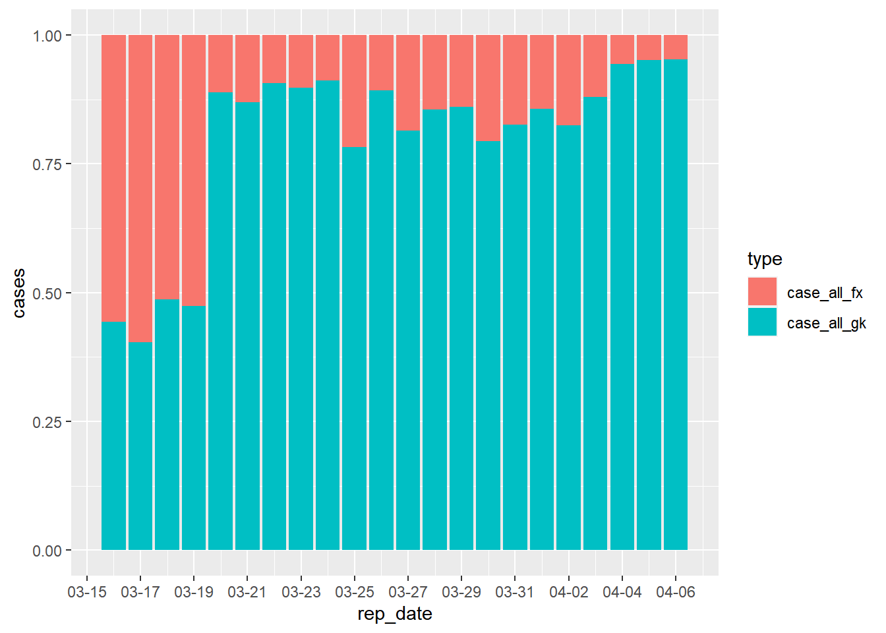
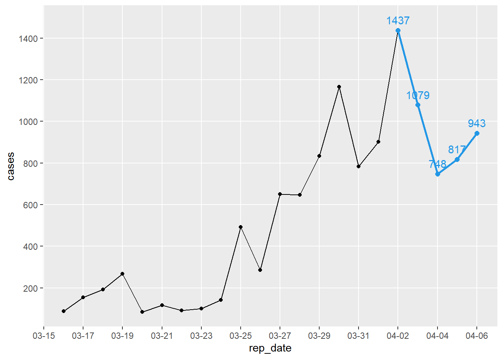
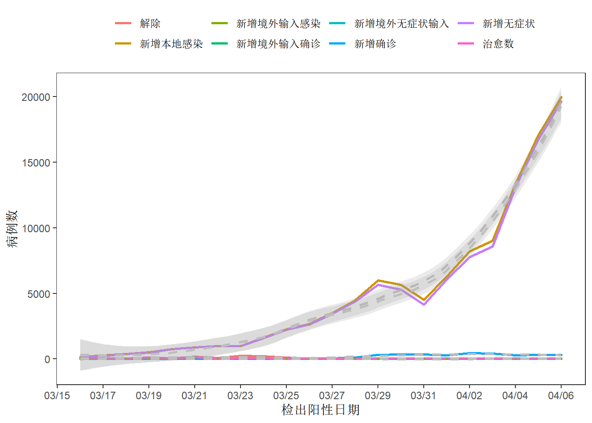
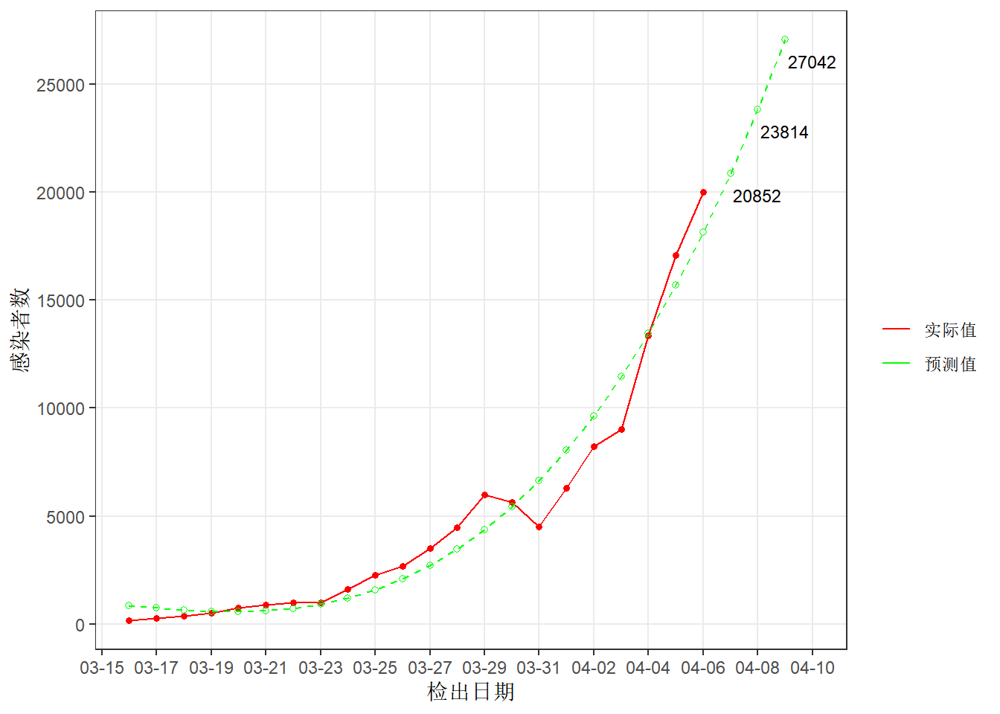

今天本地的疫情终于没有增加，抽了点时间关注其他地区的疫情形势。看官方通报的数据，对曾经的模范城市的疫情有兴趣，决定来简单看看。
1 数据获取
1.1 数据来源
要获取准确的数据，当然是上官方网站。打开上海市卫健委的官网(https://wsjkw.sh.gov.cn/xwfb/index.html)，疫情数据公告都在“新闻发布”栏目中，再仔细一看，疫情信息的标题中就包含了所有新增、确诊数据。真是太方便了。新闻页面也是连续的以_[num]为页码的编号，这种页面爬起来不要太省事。
1.2 R包
首先加载需要用到的包，主要使用rvest包获取静态网页信息，谷歌浏览器selectorgadget插件获取需要信息的节点，tidyverse整理数据，绘图，lubridate包处理日期变量。
library(rvest)
library(tidyverse)
library(lubridate)
library(readxl)
library(openxlsx)
library(ggforce)
library(mgcv)1.3 主页信息获取
使用selectorgadget在网页上找到需要的变量“时间”和“标题”，对应的node分别是.time和.list-data a，使用rvest抓取后，转为文本存储在列表中。
## 设置url
url <- "https://wsjkw.sh.gov.cn/xwfb/index.html"
## 获取首页信息
content <- read_html(url)
reportdate <- content %>% html_nodes(".time") %>% html_text() %>% as.Date.character()
title <- content %>% html_nodes(".list-date a") %>% html_text()
basedata <- tibble(reportdate = reportdate, title = title)1.4 爬取所有数据
上海的疫情变化主要从3月开始，但为了查看之前的变化，是否输入病例压力增大导致本次疫情，因此爬取了2到200页到的数据。改用purrr包的map_df函数爬取。
##使用循环爬取2到200也网页信息
url_1 <- c("https://wsjkw.sh.gov.cn/xwfb/index.html",
paste0("https://wsjkw.sh.gov.cn/xwfb/index_", c(2:200), ".html"))
webfun_0 <- function(url){
webpage <- read_html(url)
tibble( "reportdate" = webpage %>% html_nodes(".time") %>% html_text(),
"title" = webpage %>% html_nodes(".list-date a") %>% html_attr("title"))
}
basedata <- map_df(url_1, webfun_0)
## 写出数据
write.csv(basedata,"data/basedata.csv")1.5 数据清洗
这一步比较麻烦的是对标题中日期字符的整理。使用str_extract_all命令后提取的日期，变成了列表。再合并为向量形势的日期格式数据时出了点麻烦。最后使用了笨办法for循环unlist后再paste0合并。其实直接用标题前的日期-1没什么大的误差，主要是在跟自己较劲搞得这么麻烦。
2 好了，开始分析吧
2.1 先画个简单的图看看大趋势
以报告感染者类型为颜色看，从20年1月到21年12月期间，上海的感染人数几乎在处于一个长期稳定的状态，从2022年3月开始呈直升飞机式的增长。奇怪的是中间咋有个空白区，没有数据。查看原始网页，发现网站从2021年11月6日-2022年1月1日没有更新数据。这是一个奇怪的现象。不过没关系，这不影响我们后面的分析，这对原因分析有很大关系。

2.2 输入感染者的趋势
对上海这波疫情有个合理的猜测是，1月初上海接纳大量某地的航班的，导致上海市输入疫情压力陡增，再加上Omicron变异株超强传播能力，双重压力下导致这个模范城市失守。好吧，我们来看看是否能验证输入压力陡增这个猜测。从图上看新增输入的感染者数量变化并不大，鉴于确诊和无症状都属与感染这，下一步我们把本地和输入的感染者的合计数的变化可视化看看。

2.3 感染者总数
先用二者做个散点图看看,如图，完全看不出啥关系啊。。。。输入感染者较多的时候，反而本地感染处于低水平。这个图像，线性回归暂时也不考虑。我们还是从感染者数量和时间的关系看看。

画出来如下，大致能看出在3月14日前，上海几乎没有本土感染病例。

2.4 2022年1到三月
我们把时间尺度拉大到2月中旬到3月看看。放大后（下图1）到3月14日，输入感染人数开始上升，此时上海本地感染数量仍然无幅度的改变，处于平稳状态。为了更仔细看清楚变化情况，我们将y轴的数量调整至0-1000例，这时候能清楚看到每天的变化，本地感染者（蓝色）数量从3月16日快速上升者。

2.5 重点关注3月的数据
2.6 地区分布
重新爬了一下按地区分布的，结果很明显，浦东新区感染者数量最多，见下表：
| Local | 2022-04-05 | 2022-04-04 | 2022-04-03 | 2022-04-01 | 2022-03-28 | 2022-03-31 | 2022-03-30 | 2022-03-29 | 2022-04-02 | 2022-03-25 | 2022-03-27 | 2022-03-26 | 2022-03-24 | 2022-03-22 | 2022-03-20 | 2022-03-23 | 2022-03-21 | 2022-03-19 |
|---|---|---|---|---|---|---|---|---|---|---|---|---|---|---|---|---|---|---|
| 浦东新区 | 8145 | 7071 | 3654 | 2584 | 2506 | 2407 | 2207 | 2183 | 2038 | 1914 | 1429 | 323 | 193 | 237 | 220 | 218 | 169 | 135 |
| 闵行区 | 2937 | 1381 | 940 | 1043 | 370 | 392 | 780 | 987 | 829 | 206 | 619 | 972 | 490 | 305 | 265 | 256 | 122 | 53 |
| 徐汇区 | 920 | 1229 | 499 | 639 | 91 | 226 | 404 | 1100 | 1042 | 3 | 277 | 331 | 167 | 87 | 46 | 106 | 130 | 61 |
| 黄浦区 | 658 | 970 | 824 | 260 | 283 | 121 | 361 | 110 | 659 | 23 | 56 | 160 | 102 | 59 | 42 | 20 | 49 | 36 |
| 松江区 | 796 | 559 | 263 | 493 | 94 | 184 | 246 | 228 | 567 | 15 | 190 | 79 | 92 | 31 | 9 | 34 | 39 | 16 |
| 杨浦区 | 623 | 220 | 374 | 134 | 47 | 174 | 100 | 99 | 274 | 11 | 35 | 23 | 21 | 3 | 8 | 11 | 10 | 14 |
| 嘉定区 | 481 | 4 | 415 | 200 | 209 | 54 | 158 | 9 | 617 | 19 | 251 | 242 | 130 | 111 | NA | 69 | NA | 2 |
| 虹口区 | 410 | 608 | 188 | 61 | 8 | 128 | 84 | 73 | 342 | 4 | 27 | 50 | 29 | 13 | 12 | 26 | 23 | NA |
| 宝山区 | 554 | 265 | 467 | 45 | 311 | 17 | 504 | 363 | 485 | 4 | 94 | 153 | 87 | 16 | 13 | 69 | 67 | 17 |
| 普陀区 | 483 | 254 | 321 | 245 | 81 | 15 | 146 | 113 | 388 | 9 | 70 | 69 | 38 | 21 | 18 | 34 | 31 | 25 |
| 青浦区 | 384 | 314 | 232 | 87 | 57 | 95 | 77 | 87 | 231 | 13 | 43 | 22 | 13 | 20 | 4 | 10 | 5 | 5 |
| 静安区 | 302 | 50 | 338 | 189 | 104 | 164 | 102 | 175 | 324 | 2 | 70 | 108 | 70 | 28 | 32 | 48 | 44 | 15 |
| 长宁区 | 84 | 33 | 104 | 37 | 115 | 256 | 128 | 30 | 100 | 4 | 45 | 29 | 59 | 19 | 1 | 11 | 26 | 12 |
| 崇明区 | 79 | 47 | 165 | 84 | 67 | 44 | 193 | 55 | 113 | 41 | 236 | 27 | 82 | 19 | NA | 54 | NA | NA |
| 奉贤区 | 144 | 64 | 119 | 161 | 115 | 183 | 130 | 96 | 157 | NA | 45 | 84 | 24 | 8 | 13 | 12 | 22 | 6 |
| 金山区 | 77 | 52 | 103 | 49 | 19 | 42 | 33 | 26 | 60 | NA | 13 | 4 | 12 | 4 | 11 | 5 | NA | 3 |
画个玫瑰图看看，其实这个图并并能很好反应数据特征。

感觉还不如单纯的条图清晰

2.7 发现途径数据获取
获取数据信息如下
| rep_date | case_c | case_u | case_c_zh | case_c_gk | case_u_gk | case_c_fx | case_u_fx | case_all | case_all_gk | case_all_fx |
|---|---|---|---|---|---|---|---|---|---|---|
| 2022-04-06 | 322 | 19660 | 15 | 12 | 19027 | 307 | 633 | 19982 | 19039 | 943 |
| 2022-04-05 | 311 | 16766 | 40 | 4 | 16256 | 271 | 510 | 17077 | 16260 | 817 |
| 2022-04-04 | 268 | 13086 | 4 | 14 | 12592 | 264 | 494 | 13354 | 12606 | 748 |
| 2022-04-03 | 425 | 8581 | 71 | 7 | 7920 | 354 | 661 | 9006 | 7927 | 1079 |
| 2022-04-02 | 438 | 7788 | 73 | 16 | 6773 | 365 | 1015 | 8226 | 6789 | 1437 |
| 2022-04-01 | 260 | 6051 | 2 | 8 | 5402 | 258 | 649 | 6311 | 5410 | 901 |
2.8 时间分布
首先看看的大体趋势，从3月13日起，随着时间感染者数量几乎是成指数增加。但是从风险人群（红线）中检出感染者数量似乎有下降的迹象。 
2.9 人群分布
再看看每天感染者发现途径的变化情况。红色代表每天从风险人群中发现感染者，蓝色代表从管控人群。可见从风险人群中发现感染者的比例大体趋势是逐渐减少的。这种情况视乎是一个好的征兆。但同时需要考虑随着防控政策的变化，对两类人群的定义是否也随之变化？  再单独看看风险人群中检出感染者的情况，从了4月3日，4月4日连续两天下降，且看起来几乎是呈直线下降，这是一个好兆头。预示着，随着大规模核酸检测工作的全面铺开，从社会面发现感染者数量的增长势头将会慢慢遏制。

3 简单总结
从上面的简单分析可得知，上海市境外输入感染者数量，从去年2月20日左右开始上升，增加的幅度从平均12例左右，到2月24左右达到85例左右。确实存在一个数量快速增加的阶段，之后过了大概一周的时间上海本地感染者开始快速上升，我们不得不猜测这二者之间可能存在某种联系。最后一张图添加了平滑曲线，做一个大致的预测。从图可见上海这一次疫情新增病人数量仍未到达所谓的“拐点”没爬错数据。随着检测人数的增加，防控措施的进一步加码和落实，相信这一波疫情会逐渐得到控制。

3.1 预测
建立线性回归模型, 预测4月7日检出感染者20852 